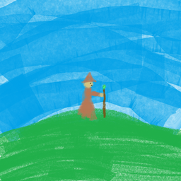

Home
Education
Work Experience
Work Projects
Certifications
Skills & Tech
Extracurricular
CV
Personal Projects
Things I built because I wanted them to exist.

Journey Together
A step-tracking app you use with your friends rather than alone — shared goals drawn as a path you all move along. On the App Store and Google Play.
Flutter · Dart · Firebase · iOS & Android